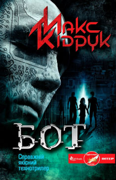

Макс Кідрук "Бот"
"Бот" - перший український технотрилер українського письменника та мандрівника Максима Кідрука. У гостросюжетному романі поєднано сучасні технології, психологія та «екшн». Події роману вигадані, але все місця, природні об'єкти, техніка, зброя, фізіологічні особливості живих організмів реальні. За сюжетом, український програміст Тимур Коршак отримує пропозицію високооплачуваної роботи в Чилі. Не знаючи в чому вона полягатиме, Тимур погоджується. Прибувши в Чилі, він опиняється в таємному лабораторному комплексі. Завдання його персоналу — зупинити так званих ботів — дітей-солдатів, керованих колективним розумом, які вирвалися на волю.